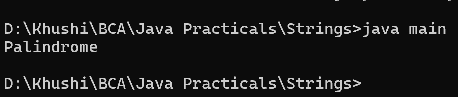

17. Program to determine whether a given string is palindrome
class main {
public static void main(String[] args) {
String str = "madam";
String reverse = new StringBuilder(str).reverse().toString();
if (str.equals(reverse)) {
System.out.println("Palindrome");
} else {
System.out.println("Not a palindrome");
}
}
}
